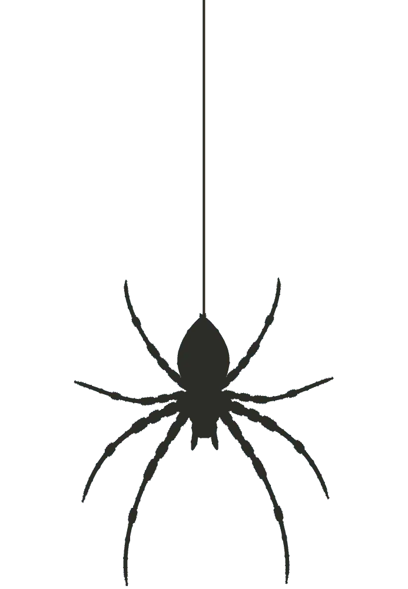

Saltar al contenido
El mundo de las arañas
Inicio
Política de cookies
Información
Juego
Claro / Oscuro
Buscar arañas
Escribe el nombre de una araña para filtrar las especies disponibles
Especies de arañas
¿Crees poder contestar algunas preguntas sobre estas arañas?
Jugar 